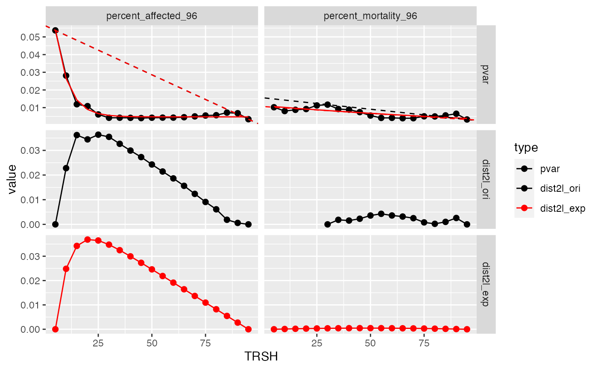

Currently two methods have been implemented to get the "keen-point" from the variance(y) - threshold(x) curve. One is to use the original y values to draw a straight line between the lowest x value (p1) to highest x value (p2). The knee-point is the x that has the longest distance to the line. The other one is to fit the data first then use the fitted responses to do the same analysis. Currently the first method is preferred.
Arguments
- d
The rcurvep object with multiple samples and TRSHs. See
combi_run_rcurvep()for an example.- p1
Default = NULL, or an integer value to manually set the first index of line.
- p2
Default = NULL, or an integer value to manually set the last index of line.
- plot
Default = TRUE, plot the diagnostic plot.
Value
A list with two components: stats and outcome.
stats: a tibble, including pooled variance (pvar), fitted responses (y_exp_fit, y_lm_fit), distance to the line (dist2l)
outcome: a tibble, including estimated BMRs (bmr)
; Suffix in the stats and outcome tibble: "ori" (original values), "exp"(exponential fit). prefix in the outcome tibble, "cor" (correlation between the fitted responses and the original responses), "bmr" (benchmark response), "qc" (quality control).
Details
The estimated BMR can be used in the calculation of POD.
For example, if bmr = 25.
For Curvep, combi_run_rcurvep(zfishbeh, TRSH = 25).
For Hill fit, summarize_fit_output(run_fit(zfishbeh, modls = "hill"), thr_resp = 25, extract_only = TRUE).
Examples
# no extra cleaning
data(zfishdev_act)
bmr_out <- estimate_dataset_bmr(zfishdev_act, plot = FALSE)
plot(bmr_out)
#> $`1`
#> Warning: Removed 5 rows containing missing values or values outside the scale range
#> (`geom_point()`).
#> Warning: Removed 76 rows containing missing values or values outside the scale range
#> (`geom_line()`).

#>
# if want to do extra cleaning...
actm <- summarize_rcurvep_output(zfishdev_act, clean_only = TRUE, inactivate = "CARRY_OVER")
bmr_out <- estimate_dataset_bmr(actm, plot = FALSE)